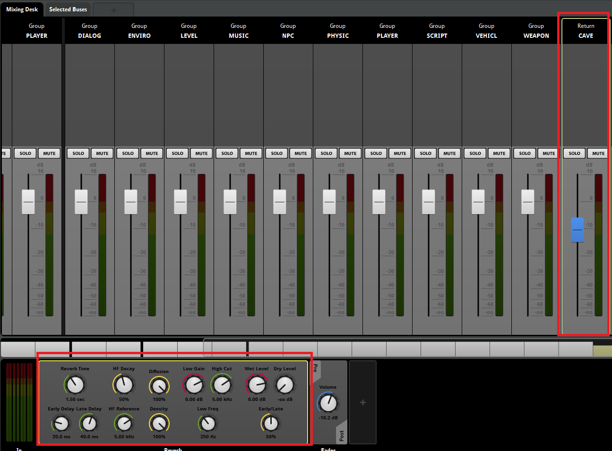
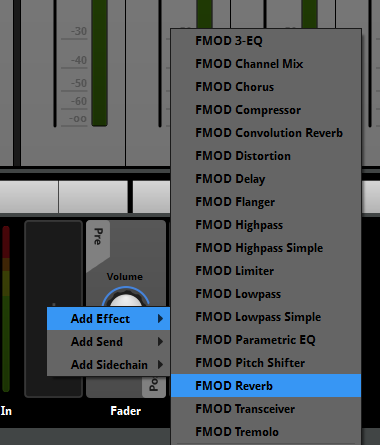
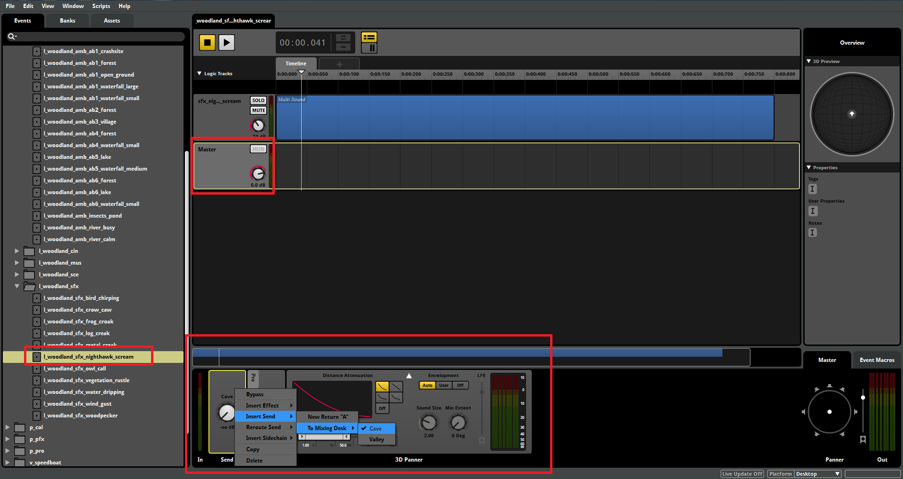
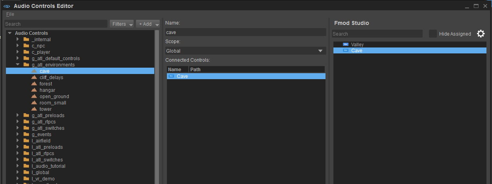

Overview
This section describes how to setup Reverbs in levels using FMOD Studio.
To learn more about audio system Environments in CRYENGINE please have a look in the chapter Audio & Reverbs*.
Setting up Reverbs in FMOD Studio
Inside FMOD Studio, select the Mixer Window via Window -> Mixer Window or press Ctrl+2.  
Create a New Return and name it accordingly.
Now select your Return Track in the Fader View, and add a Reverb Effect before the Fader Unit.
Selecting the Return Fader and adding Reverb Effect
Adding a Reverb Effect in the Return Track
Now you can tweak the reverb values to match your environment.

To control which SoundEvent gets affected and also allow fading, each SoundEvent requires an Effect Send per Reverb Return.
Therefore you select the SoundEvent, inside the Master track, and add a Send Fader before the 3D Panner or respectively at the beginning of your effect chain.

Once the audio system Environment is assigned in the Audio Controls Editor, the reverb will automatically fade in based on the EnvironmentDistance value set in the AudioAreaAmbience or AudioAreaEntity.
Connecting the Audio System Environmments with the Reverb Return
Remember that you can also map Game Parameters to an audio system Environment in the Audio Controls Editor.